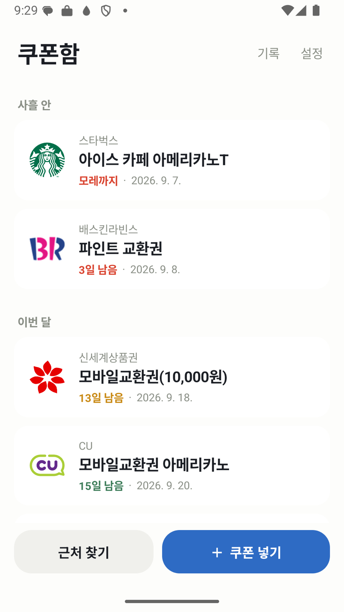
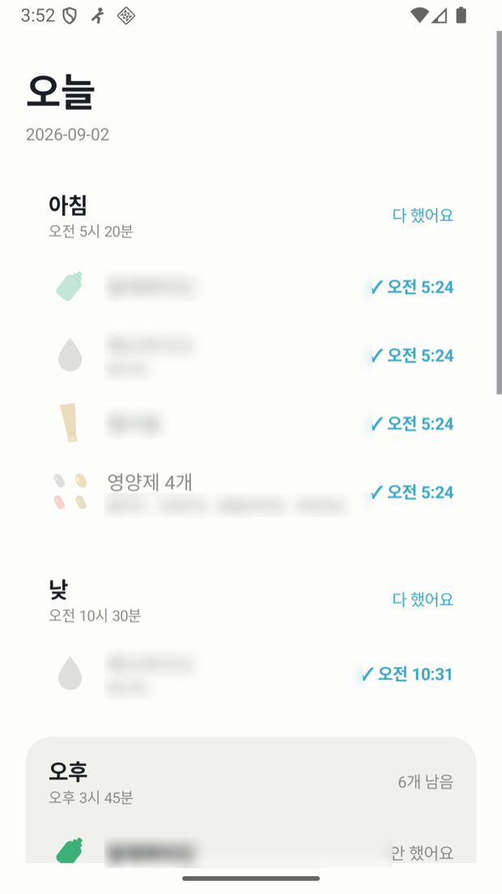
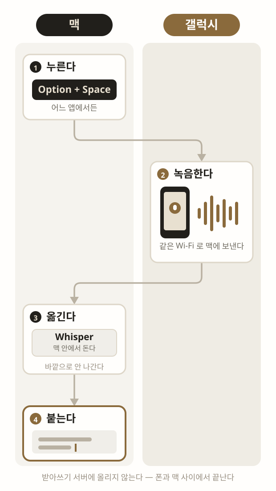

마
마이크 자동 멈춤
마이크가 켜지면 음악을 멈추고, 꺼지면 다시 튼다
개발 도구2026.09
마이크 자동 멈춤은 갤럭시 음성 브리지로 받아쓰기할 때 음악이 섞이는 것을 막는다. 다만 그것 전용은 아니다 — 화상회의에도 걸리고 혼자서도 선다. 두 편을 어떻게 이어 보일지 다섯 판.
스키마에는 편끼리 잇는 필드가 없다. 판마다 필요한 필드를 아래에 적었다. 이름 「마이크 자동 멈춤」은 임시다.
지금 — 잇지 않는다
기간 순으로만 서니 둘 사이에 다른 편이 끼어든다. 같이 쓰는 것인 줄 알 길이 없다.
마이크가 켜지면 음악을 멈추고, 꺼지면 다시 튼다

기한 남은 쿠폰을 모아 알리고 바코드를 크게 띄운다

약과 영양제를 홈 화면 위젯에서 바로 체크한다

갤럭시를 맥의 무선 받아쓰기 마이크로
필드 없음.
A — 카드 아래 꼬리 줄
카드마다 아래에 상대를 한 줄로 적는다. 목록에서 바로 보이고 자리는 그대로다.
필드 with: [슬러그] 양쪽에. 카드 높이가 한 줄 늘어 짝 없는 카드와 아래 줄이 어긋난다.
B — 두 카드를 한 상자로 묶는다
붙여 세우고 머리에 묶음 이름을 붙인다. 관계가 글자 없이 자리로 보인다.
필드 group: 받아쓰기 한 벌 양쪽에. 묶음이 두 칸을 먹어 4열 격자가 밀리고, 갈래로 거르면 묶음이 반쪽만 남는다.
C — 편 글머리 메타 줄에 한 줄
목록은 그대로 두고 그 편을 열었을 때만 보인다. 깃허브와 링크가 이미 서 있는 줄에 얹는다.
안드로이드 앱 · Mac 도우미
갤럭시를 맥의 무선 받아쓰기 마이크로
덮개를 닫으면 Mac 마이크가 같이 꺼진다. 갤럭시를 무선 마이크로 쓴다. Option+Space 두 번, 그 사이 한 말이 커서 자리에 선다.
필드 with: [슬러그] 양쪽에. 만들기 쉽고 카드 높이를 안 건드린다. 대신 목록에서는 안 보인다.
D — 편 맨 아래 「같이 쓰는 것」 절
다 읽은 자리에서 상대 편으로 건넨다. 무엇을 보태 주는지 한 줄로 적을 자리가 있다.
전사가 끝나면 Mac 은 커서 자리에 결과를 붙인다. Esc 를 누르면 그 녹음은 버린다.
필드 with: [{ slug, note }] — 까닭 한 줄까지. 관계를 설명할 자리가 유일하게 여기뿐이다.
E — 한 편으로 합친다
마이크 자동 멈춤을 독립 편으로 두지 않고 갤럭시 음성 브리지 안의 절로 넣는다.
안드로이드 앱 · Mac 도우미
갤럭시를 맥의 무선 받아쓰기 마이크로
받아쓰기를 켜면 음악이 마이크로 섞여 들어온다. 맥이 녹음을 시작했는지 CoreAudio 에 직접 물어(kAudioDevicePropertyDeviceIsRunningSomewhere) 음악을 멈추고, 끝나면 다시 튼다. 내가 멈춘 것만 다시 트니 원래 멈춰 있던 음악을 켜 버리는 일은 없다.
Option+Space 로 녹음을 시작하면 갤럭시 마이크 소리가 같은 Wi-Fi 로 Mac 에 실시간 전송된다.
필드 없음 — 편이 하나로 줄어든다. 다만 마이크 자동 멈춤은 화상회의에도 걸려서 받아쓰기 전용이 아니고, 저장소도 따로다.
고르는 축
목록에서 보여야 하나(A, B), 편을 열었을 때만이면 되나(C, D), 아예 한 편인가(E).